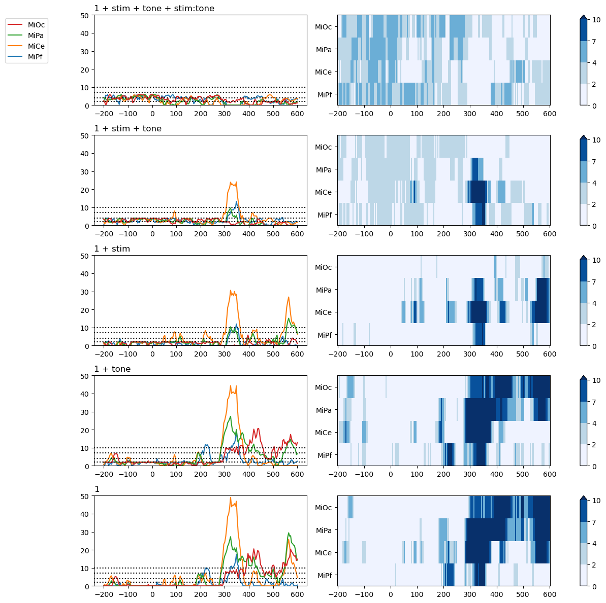
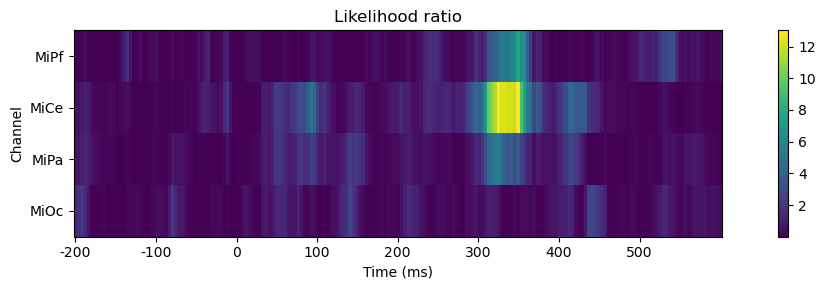
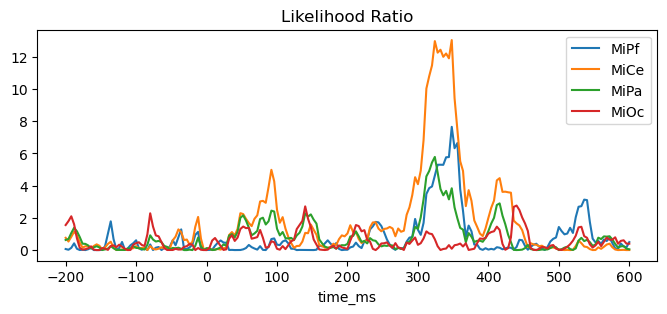

Note
Click here to download the full example code
AIC and likelihood ratio model comparison¶
There are many approaches to comparing models and evaluating relative goodness-of-fit. The FitGrid[time, channe] query mechanism is designed to streamline the computations for whatever approach is deemed appropriate for the research question at hand..
The AIC example demonstrates the fitgrid.utils.summarize function, a convenience wrapper that fits a list of models and returns key summary information for each as an indexed data frame. The summary may be passed to a function for visualizing the AIC \(\mathsf{\Delta_{min}}\) model comparison ([BurAnd2004]) as shown, or processed by custom user routines as needed.
For cases where the summary information is insufficient, the likelihood ratio example illustrates how to compute and visualize a model comparison measure derived from the original fitted grids. Other measures may be computed in a similar manner.
Prepare sample data¶
import pandas as pd
from matplotlib import pyplot as plt
import fitgrid as fg
from fitgrid import DATA_DIR, sample_data
sample_data.get_file("sub000p3.ms1500.epochs.feather")
p3_epochs_df = pd.read_feather(DATA_DIR / "sub000p3.ms1500.epochs.feather")
# drop calibration pulses for these examples
p3_epochs_df = p3_epochs_df.query("stim != 'cal'")
# look up the data QC flags and select the good epochs
good_epochs = p3_epochs_df.query("match_time == 0 and log_flags == 0")[
"epoch_id"
]
p3_epochs_df = p3_epochs_df.query("epoch_id in @good_epochs")
# rename the time stamp column
p3_epochs_df.rename(columns={"match_time": "time_ms"}, inplace=True)
# select columns of interest for modeling
indices = ["epoch_id", "time_ms"]
predictors = ["stim", "tone"] # categorical with 2 levels: standard, target
channels = ["MiPf", "MiCe", "MiPa", "MiOc"] # midline electrodes
p3_epochs_df = p3_epochs_df[indices + predictors + channels]
# set the epoch and time column index for fg.Epochs
p3_epochs_df.set_index(["epoch_id", "time_ms"], inplace=True)
# "baseline", i.e., center each epoch on the 200 ms pre-stimulus interval
centered = []
for epoch_id, vals in p3_epochs_df.groupby("epoch_id"):
centered.append(
vals[channels]
- vals[channels].query("time_ms >= -200 and time_ms < 0").mean()
)
p3_epochs_df[channels] = pd.concat(centered)
# slice epochs down to a shorter interval
p3_epochs_df.query("time_ms >= -200 and time_ms <= 600", inplace=True)
p3_epochs_df
Ingest as fitgrid.Epochs¶
p3_epochs_fg = fg.epochs_from_dataframe(
p3_epochs_df, epoch_id="epoch_id", time="time_ms", channels=channels
)
Model summaries¶
The fitgrid.utils.summarize function is a convenience wrapper that fits a list of models and collects a few key summary measures into a single dataframe indexed by model, beta estimate, and the measure. It supports OLS and LME model fitting and the summaries are returned are in the same format.
This experimental design is a fully crossed 2 (stim: standard, target) \(\times\) 2 (tone: hi, lo). The predictors are treatment coded (patsy default).
Here is a stack of 5 models to summarize and compare:
rhss_T = [
"1 + stim + tone + stim:tone", # long form of "stim * tone"
"1 + stim + tone",
"1 + stim",
"1 + tone",
"1",
]
from fitgrid.utils.summary import summarize
lm_summary_T = summarize(
p3_epochs_fg,
modeler="lm",
RHS=rhss_T,
LHS=channels,
parallel=False,
quiet=True,
)
lm_summary_T
Out:
/home/runner/work/fitgrid/fitgrid/fitgrid/utils/summary.py:140: FutureWarning: fitgrid summaries are in early days, subject to change
warnings.warn(
AIC model comparison: \(\Delta_{i} = \mathsf{AIC}_{i} - \mathsf{AIC_{min}}\)¶
Akiakie’s information criterion (AIC) increases with residual error and the number of model parameters so comparison on AIC favors the better fitting, more parsimonious models with lower AIC values.
This example visualizes the channel-wise time course of \(\Delta_{i} = \mathsf{AIC}_{i} - \mathsf{AIC_{min}}\), a measure of the AIC of model i vs. the lowest AIC of any model in the set. Burnham and Anderson propose heuristics where models with \(\Delta_{i}\) around 4 are less well supported by the data than the alternative(s) and models with \(\Delta_{i}\) > 7 substantially less so.
In the next figure, the line plots (left column) and raster plots (right column) show the same data in different ways. Higher amplitude line plots and corresponding darker shades of blue in the raster plot indicate that the model’s AIC is higher than the best candidate in the set.
Prestimulus. Prior to stimulus onset at time = 0, the more parsimonious models (bottom three rows) have systematically lower AIC values (broad regions of lighest blue) than the more complex models (top two rows). This indicates that during this interval, the predictor variables alone and in combination do not soak up enough variability to offset the penalty for increasing the model complexity. In terms of this AIC measure, none of the models appear systematically better supported by the data than the null model (bottom row) in the prestimulus interval.
Post-stimulus. In the interval between around 300 - 375 ms poststimulus, the full model that includes stim and tone predictors and their interaction has the minimum AIC among the models compared at all channels except the prefrontal MiPf. The sharp transients in the magntiude of the AIC differences (> 7) at these channels in this interval indicates substantially less support for the alternative models.
from fitgrid.utils.summary import plot_AICmin_deltas
fig, axs = plot_AICmin_deltas(lm_summary_T, figsize=(12, 12))
fig.tight_layout()
for ax_row in range(len(axs)):
axs[ax_row, 0].set(ylim=(0, 50))

Likelihood Ratio¶
This example fits a full and reduced model, computes and then visualizes the time course of likelihood ratios with a few lines of code.
Fit the full model. The log likelihood dataframe is returned by querying the FitGrid.
lmg_full = fg.lm(p3_epochs_fg, RHS="1 + stim + tone + stim:tone", LHS=channels)
lmg_full.llf
Out:
0%| | 0/201 [00:00<?, ?it/s]
2%|1 | 4/201 [00:00<00:06, 32.51it/s]
4%|3 | 8/201 [00:00<00:05, 33.61it/s]
6%|5 | 12/201 [00:00<00:05, 33.89it/s]
8%|7 | 16/201 [00:00<00:05, 33.51it/s]
10%|9 | 20/201 [00:00<00:05, 34.12it/s]
12%|#1 | 24/201 [00:00<00:05, 34.03it/s]
14%|#3 | 28/201 [00:00<00:05, 34.26it/s]
16%|#5 | 32/201 [00:00<00:04, 34.18it/s]
18%|#7 | 36/201 [00:01<00:04, 34.17it/s]
20%|#9 | 40/201 [00:01<00:04, 34.31it/s]
22%|##1 | 44/201 [00:01<00:04, 34.43it/s]
24%|##3 | 48/201 [00:01<00:04, 34.69it/s]
26%|##5 | 52/201 [00:01<00:04, 34.54it/s]
28%|##7 | 56/201 [00:01<00:04, 34.51it/s]
30%|##9 | 60/201 [00:01<00:04, 34.53it/s]
32%|###1 | 64/201 [00:01<00:03, 34.45it/s]
34%|###3 | 68/201 [00:01<00:03, 34.38it/s]
36%|###5 | 72/201 [00:02<00:03, 34.33it/s]
38%|###7 | 76/201 [00:02<00:03, 34.39it/s]
40%|###9 | 80/201 [00:02<00:03, 34.35it/s]
42%|####1 | 84/201 [00:02<00:03, 34.69it/s]
44%|####3 | 88/201 [00:02<00:03, 34.59it/s]
46%|####5 | 92/201 [00:02<00:03, 34.37it/s]
48%|####7 | 96/201 [00:02<00:03, 34.27it/s]
50%|####9 | 100/201 [00:02<00:02, 34.15it/s]
52%|#####1 | 104/201 [00:03<00:02, 34.21it/s]
54%|#####3 | 108/201 [00:03<00:02, 34.21it/s]
56%|#####5 | 112/201 [00:03<00:02, 33.96it/s]
58%|#####7 | 116/201 [00:03<00:02, 34.00it/s]
60%|#####9 | 120/201 [00:03<00:02, 34.17it/s]
62%|######1 | 124/201 [00:03<00:02, 34.31it/s]
64%|######3 | 128/201 [00:03<00:02, 34.16it/s]
66%|######5 | 132/201 [00:03<00:02, 34.07it/s]
68%|######7 | 136/201 [00:03<00:01, 34.00it/s]
70%|######9 | 140/201 [00:04<00:01, 33.95it/s]
72%|#######1 | 144/201 [00:04<00:01, 33.99it/s]
74%|#######3 | 148/201 [00:04<00:01, 33.97it/s]
76%|#######5 | 152/201 [00:04<00:01, 34.00it/s]
78%|#######7 | 156/201 [00:04<00:01, 33.98it/s]
80%|#######9 | 160/201 [00:04<00:01, 33.73it/s]
82%|########1 | 164/201 [00:04<00:01, 33.89it/s]
84%|########3 | 168/201 [00:05<00:02, 14.73it/s]
86%|########5 | 172/201 [00:05<00:01, 17.71it/s]
88%|########7 | 176/201 [00:05<00:01, 20.67it/s]
90%|########9 | 180/201 [00:05<00:00, 23.39it/s]
92%|#########1| 184/201 [00:05<00:00, 25.85it/s]
94%|#########3| 188/201 [00:06<00:00, 27.80it/s]
96%|#########5| 192/201 [00:06<00:00, 29.38it/s]
98%|#########7| 196/201 [00:06<00:00, 30.67it/s]
100%|#########9| 200/201 [00:06<00:00, 31.53it/s]
100%|##########| 201/201 [00:06<00:00, 31.38it/s]
Fit the reduced model likewise.
lmg_reduced = fg.lm(p3_epochs_fg, RHS="1 + stim + tone", LHS=channels)
lmg_reduced.llf
Out:
0%| | 0/201 [00:00<?, ?it/s]
2%|1 | 4/201 [00:00<00:05, 32.99it/s]
4%|3 | 8/201 [00:00<00:05, 34.48it/s]
6%|5 | 12/201 [00:00<00:05, 34.62it/s]
8%|7 | 16/201 [00:00<00:05, 35.14it/s]
10%|9 | 20/201 [00:00<00:05, 35.44it/s]
12%|#1 | 24/201 [00:00<00:05, 35.31it/s]
14%|#3 | 28/201 [00:00<00:04, 35.34it/s]
16%|#5 | 32/201 [00:00<00:04, 35.46it/s]
18%|#7 | 36/201 [00:01<00:04, 35.52it/s]
20%|#9 | 40/201 [00:01<00:04, 35.51it/s]
22%|##1 | 44/201 [00:01<00:04, 35.16it/s]
24%|##3 | 48/201 [00:01<00:04, 35.12it/s]
26%|##5 | 52/201 [00:01<00:04, 35.21it/s]
28%|##7 | 56/201 [00:01<00:04, 35.19it/s]
30%|##9 | 60/201 [00:01<00:04, 34.78it/s]
32%|###1 | 64/201 [00:01<00:03, 34.86it/s]
34%|###3 | 68/201 [00:01<00:03, 34.95it/s]
36%|###5 | 72/201 [00:02<00:03, 35.26it/s]
38%|###7 | 76/201 [00:02<00:03, 35.48it/s]
40%|###9 | 80/201 [00:02<00:03, 35.46it/s]
42%|####1 | 84/201 [00:02<00:03, 35.61it/s]
44%|####3 | 88/201 [00:02<00:03, 35.63it/s]
46%|####5 | 92/201 [00:02<00:03, 35.74it/s]
48%|####7 | 96/201 [00:02<00:02, 35.81it/s]
50%|####9 | 100/201 [00:02<00:02, 35.71it/s]
52%|#####1 | 104/201 [00:02<00:02, 35.67it/s]
54%|#####3 | 108/201 [00:03<00:02, 35.66it/s]
56%|#####5 | 112/201 [00:03<00:02, 35.61it/s]
58%|#####7 | 116/201 [00:03<00:02, 35.67it/s]
60%|#####9 | 120/201 [00:03<00:02, 35.66it/s]
62%|######1 | 124/201 [00:03<00:02, 35.59it/s]
64%|######3 | 128/201 [00:03<00:02, 35.63it/s]
66%|######5 | 132/201 [00:03<00:01, 35.55it/s]
68%|######7 | 136/201 [00:03<00:01, 35.45it/s]
70%|######9 | 140/201 [00:03<00:01, 35.54it/s]
72%|#######1 | 144/201 [00:04<00:01, 35.57it/s]
74%|#######3 | 148/201 [00:04<00:01, 35.83it/s]
76%|#######5 | 152/201 [00:04<00:01, 34.89it/s]
78%|#######7 | 156/201 [00:04<00:01, 35.05it/s]
80%|#######9 | 160/201 [00:04<00:01, 35.27it/s]
82%|########1 | 164/201 [00:04<00:01, 35.43it/s]
84%|########3 | 168/201 [00:04<00:00, 35.49it/s]
86%|########5 | 172/201 [00:04<00:00, 35.65it/s]
88%|########7 | 176/201 [00:05<00:00, 31.29it/s]
90%|########9 | 180/201 [00:05<00:00, 30.64it/s]
92%|#########1| 184/201 [00:05<00:00, 30.27it/s]
94%|#########3| 188/201 [00:05<00:00, 30.15it/s]
96%|#########5| 192/201 [00:05<00:00, 29.52it/s]
97%|#########7| 195/201 [00:05<00:00, 29.22it/s]
99%|#########9| 199/201 [00:05<00:00, 30.94it/s]
100%|##########| 201/201 [00:05<00:00, 34.37it/s]
Calculate. The likelihood ratio is the difference of the log likelihoods.
likelihood_ratio = lmg_full.llf - lmg_reduced.llf
likelihood_ratio
Visualize. This comparison shows that stimulus x tone interaction term in the model has little systematic impact on the goodness-of-fit as given by the likelihood except around 300 - 375 ms poststimulus, largest over central scalp (MiCe).
fig, ax = plt.subplots(figsize=(12, 3))
# render
im = ax.imshow(likelihood_ratio.T, interpolation="none", aspect=16)
cb = fig.colorbar(im, ax=ax)
# label
ax.set_title("Likelihood ratio")
ax.set(xlabel="Time (ms)", ylabel="Channel")
xtick_labels = range(-200, 600, 100)
ax.set_xticks([likelihood_ratio.index.get_loc(tick) for tick in xtick_labels])
ax.set_xticklabels(xtick_labels)
ax.set_yticks(range(len(likelihood_ratio.columns)))
ax.set_yticklabels(likelihood_ratio.columns)
fig.tight_layout()

fig, ax = plt.subplots(figsize=(8, 3))
ax.set_title("Likelihood Ratio")
_ = (lmg_full.llf - lmg_reduced.llf).plot(ax=ax)

Total running time of the script: ( 0 minutes 49.720 seconds)